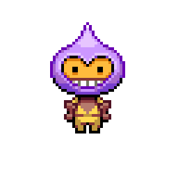

Справка по игре

Управление персонажем осуществляется с помощью клавиш управление:
- клавиша вверх выполняет прыжок;
- клавиша влево перемещает влево;
- клавиша вправо перемещает вправо.
В начале каждого уровня игрок получает 3 жизни и происходит отсчет времени за которое необходимо пройти уровень, так же на уровне имеются различные противники, при столкновании с которыми игрок лишается одной из жизней, при сгорании третьей жизни перед глазами игрока появляется стартовое меню игры.
 Игрок лишается жизни если:
Игрок лишается жизни если:
Игрок лишается жизни если:
- кончилось время;
- игрок столкнулся с одним из противников;
- упал на шипы.
Для прохождения уровня необходимо попасть в телепорт.
На четных уровнях для открытия телепорта нужно найти бриллиант после которого появлется ранее скрытый телепорт.